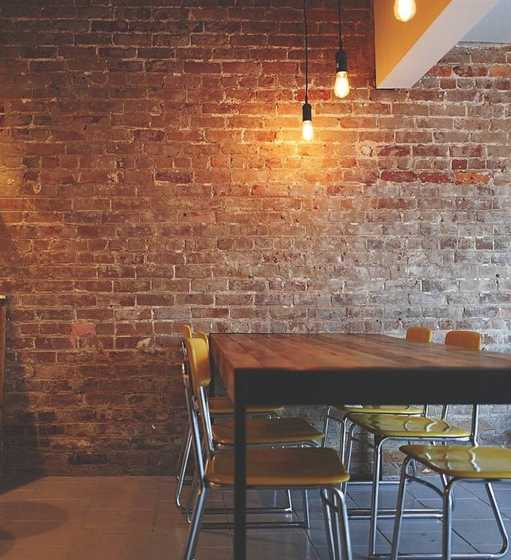
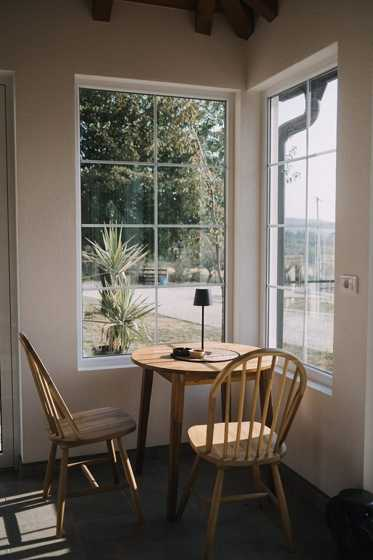
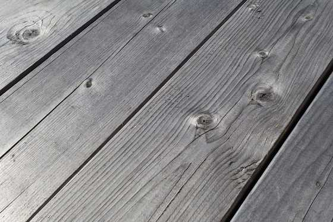
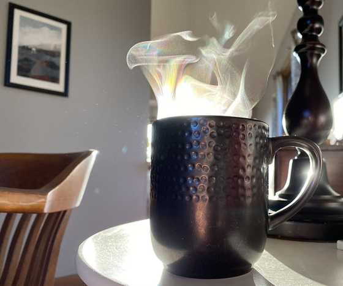

熊本県荒尾市・四ツ山町の喫茶店
木と花のそばで、
ゆっくりを楽しむ一杯を。
サクトコーヒーは、店内外に木や花、観葉植物が置かれた、居心地のいい喫茶店です。
お店のこと
ゆっくりを楽しむ、居心地のいい喫茶店。
紹介記事によると、サクトコーヒー(SAKUTO COFFEE)は荒尾市四ツ山町にある喫茶店で、2023年12月にオープンしました。店内外には木や花、観葉植物が飾られ、明るく自然な雰囲気で、クラシックなどの落ち着いた音楽が流れているそうです。ランチやパスタ、ホットサンド、チーズケーキなどのスイーツをいただけます。
お店の名前の意味やオーナーの想いについては、確認できた情報がありません。このページのコンセプト「木と花のそばでゆっくり」は、紹介記事の雰囲気にもとづく制作側のイメージです。
情報源: Araoo!(紹介記事) / アースエナジー(ブログ) / Instagram



メニュー
ランチと、甘いものと、コーヒーと。
紹介記事で触れられていたメニューの種類です。価格・内容は変わることがあるため「準備中」とし、最新情報はInstagramをご覧ください。





写真はフリー素材のイメージで、お店の実際の様子や提供している料理・飲み物ではありません。
口コミ
こんな声が聞こえてきそうです。
イメージ例
窓の近くの席で、ゆっくり過ごせました。植物が多くて落ち着きます。
イメージ例
ランチのあとにチーズケーキとコーヒーを。のんびりした時間になりました。
イメージ例
静かな音楽と木のぬくもりで、つい長居してしまいました。
上記は制作側が作成したイメージ例であり、実在のお客様の声ではありません。
アクセス
ご案内
| 所在地 | 〒864-0052 熊本県荒尾市四ツ山町2丁目11-9 |
|---|---|
| 電話 | 準備中 |
| 営業時間 | 準備中 |
| 定休日 | 準備中 |
| SNS | Instagram @sakutocoffee |
写真クレジット(フリー素材・国外または撮影地不明。縮小・切り抜き加工あり)
- Coffee steaming in a mug / PedanticNarrativeController / CC0 1.0(撮影地: 米国ミネソタ州付近(座標より))
- White cup of black coffee / Jon-Isac Lindberg / CC0 1.0(撮影地: 撮影地不明)
- Cup of coffee on café table / Ssu / CC BY-SA 4.0(撮影地: ノルウェー付近(位置情報より))
- Green Coffee Beans (4075921494) / Michael Allen Smith@INeedCoffee / CC BY-SA 2.0(撮影地: 撮影地不明)
- The cup of coffee on a wooden table (47939081677) / Artem Beliaikin / CC BY 2.0(撮影地: 撮影地不明)
- Roasted arabica coffee beans Minca / Roger Burger / CC0 1.0(撮影地: コロンビア(説明文より))
- Top view of a yellow cup of black coffee (51162366368) / Ivan Radic / CC BY 2.0(撮影地: 撮影地不明)
- Wicker plant and big window (Unsplash) / Amanda Mocci / CC0 1.0(撮影地: 撮影地不明)
- Weatherworn top of wooden table / W.carter / CC0 1.0(撮影地: スウェーデン(Lysekil自治体))
- Empty coffee shop interior with wooden table and water skis / Drew Coffman / CC0 1.0(撮影地: 米国フロリダ州タンパ(カテゴリ記載より))
- Glasses and notebook on a wooden table in a bright room / Shixart1985 / CC BY 2.0(撮影地: 撮影地不明)
- A small, inviting corner features a wooden table with two chairs beside a large window / Shixart1985 / CC BY 2.0(撮影地: 撮影地不明)